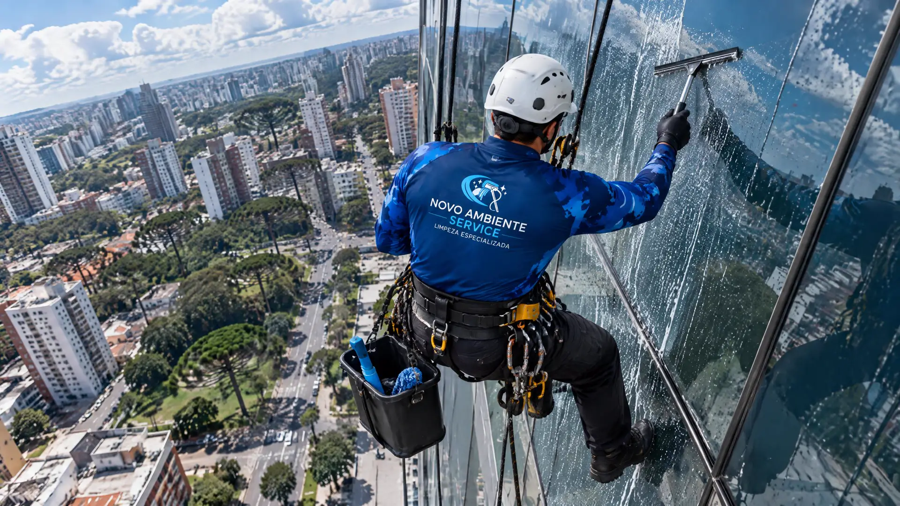

Condomínio e prédio comercial
Fachada de vidro e vidro alto que ninguém do prédio alcança, e se alguém se machucar lá em cima quem responde é o síndico.
Equipe de altura e data marcada com a administração do prédio.
Orçamento pro condomínio
Do térreo ao último andar: vidros em altura com rapel, fachadas de vidro, vitrines, casas e pós-obra.
Da sacada à pele de vidro de um prédio comercial, a Novo Ambiente limpa vidros em Curitiba e na Região Metropolitana.
Pra onde escada e haste não chegam: a equipe desce de rapel e limpa o vidro de cima a baixo.
Vidros externos de prédios, edifícios comerciais e condomínios, limpos por fora, painel a painel.

Vitrine sem marca de dedo e de chuva, no dia e no horário que não atrapalham o atendimento.
Vidro alto e de sacada que você não alcança sem se arriscar, transparente de novo e sem ninguém da família subir em escada.

Resto de tinta, cimento e poeira de obra saem do vidro novo, com cuidado pra não riscar.
Marca de chuva, poeira de obra e marca de dedo saem. A fachada volta a refletir o céu, e quem está dentro volta a ver a cidade.

 antes
depois
antes
depois
Fachada de vidro, torre comercial. Imagem ilustrativa: no site no ar, entram fotos de limpezas feitas pela Novo Ambiente.
Fachada de vidro e vidro alto que ninguém do prédio alcança, e se alguém se machucar lá em cima quem responde é o síndico.
Equipe de altura e data marcada com a administração do prédio.
Orçamento pro condomínioVitrine com marca de dedo e mancha de chuva toda semana, e funcionário parando o atendimento pra passar pano.
Vidro sempre limpo, com dia e horário combinados.
Orçamento pra empresaJanela alta, pé-direito alto e vidro de sacada que você não alcança sem se arriscar.
Vidro transparente de novo, sem escada pra ninguém da família.
Orçamento pra casaSim. Atendemos Curitiba e a Região Metropolitana. Mande o endereço pelo WhatsApp e a gente confirma.
Pelo WhatsApp (41) 99779-9646. Uma foto do vidro e o endereço já bastam pra começar, e o orçamento é sem compromisso.
Sim. Vidros altos, fachadas de vidro, átrios e vidros de pé-direito alto são limpos com rapel, onde escada e haste não chegam.
Sim. Tiramos resto de tinta, cimento e poeira de obra do vidro novo, com cuidado pra não riscar.
Pele de vidro (Structural Glazing), cortina de fachada (Curtain Wall), vitrines, portas e painéis do chão ao teto, janelas e esquadrias, sacadas e envidraçamento de sacada, guarda-corpos de vidro e elevadores panorâmicos.
Mande uma foto do vidro pelo WhatsApp e receba o orçamento sem compromisso.